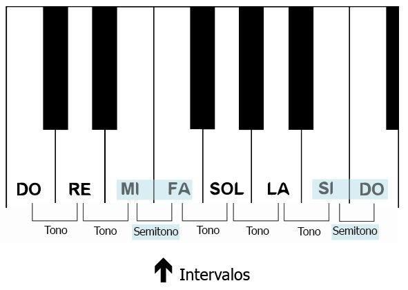
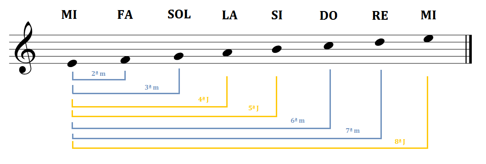

Elementos de la armonía musical
Ahora que hemos comentado qué es la armonía musical, es necesario profundizar en algunos de los elementos básicos que la componen. Para poder tener un conocimiento claro de cómo utilizar esta técnica musical en la práctica, debemos tener en cuenta los siguientes elementos clave:
• Escalas. Las escalas musicales son las que nos permitirán determinar el sentimiento o sensaciones de nuestra obra. Una escala musical no es nada más que la secuencia de notas musicales, las cuales se pueden representar como tonos. El principal objetivo que cumplen las escalas es el de crear las bases de una tonalidad y de una secuencia de melodías. Las escalas se organizan de forma ascendente o descendente. Además, existen distintos tipos de escalas, como lo son las pentatónicas, hexátonas, diatónicas, cromáticas y modales.

• Intervalos. Los intervalos tienen la función de medir la distancia existente entre dos tonos musicales, ya sean simultáneos o sucesivos. Dichas mediciones se realizan a través de los tonos y semitonos. Dentro de la armonía de una obra musical, sirven para dar mayor dinamismo a las frecuencias en los acordes. Sus principales tipos son los intervalos unísonos, segunda, tercera, cuarta, quinta, etc. 